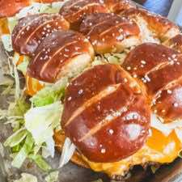

How to Make Big Mac Pretzel Sliders
Main DishSandwich
PrepPT0S
CookPT0S

Ingredients
- 2 packages of 9 pretzel Rolls (You can also use Hawaiian rolls!)
- 2 lbs of Ground Beef or Ground Turkey
- 1 Small Yellow Onion, Minced
- 14 Slices of cheddar Cheese
- 2 Cups of Shredded Lettuce
- 12 to 15 Hamburger Dill Pickles
- 1/3 C of Thousand Island Dressing or (You can also use a light version)
- 2 eggs
- 2 teaspoon of Garlic Powder (or to taste)
- 2 Tablespoons of Minced Onion (or to taste)
Directions
- Combine ground beef, minced onion, salt, pepper, garlic powder and eggs. Place bottom half of dinner rolls on a baking sheet in two groups (about 9 rolls in reach group.)
- Divide mixture in half and form two rectangles that are a little bit bigger than the dinner rolls on a baking sheet
- Bake at 350 degrees for about 15-20 minutes until meat is cooked.
- Spoon two tablespoons of thousand island dressing on bottoms of buns
- Blot any extra grease off with a paper towel & place the meat patties on top of buns. Drizzle thousand island on top
- Place cheese on top of the meat patties. Put tray back in the oven until cheese is melted.
- Remove from oven and add minced onion, pickles, & lettuce. Top with buns.
Source
https://lifebyleanna.com/how-to-make-big-mac-pretzel-sliders/
This page includes Schema.org Recipe structured data for recipe importers.